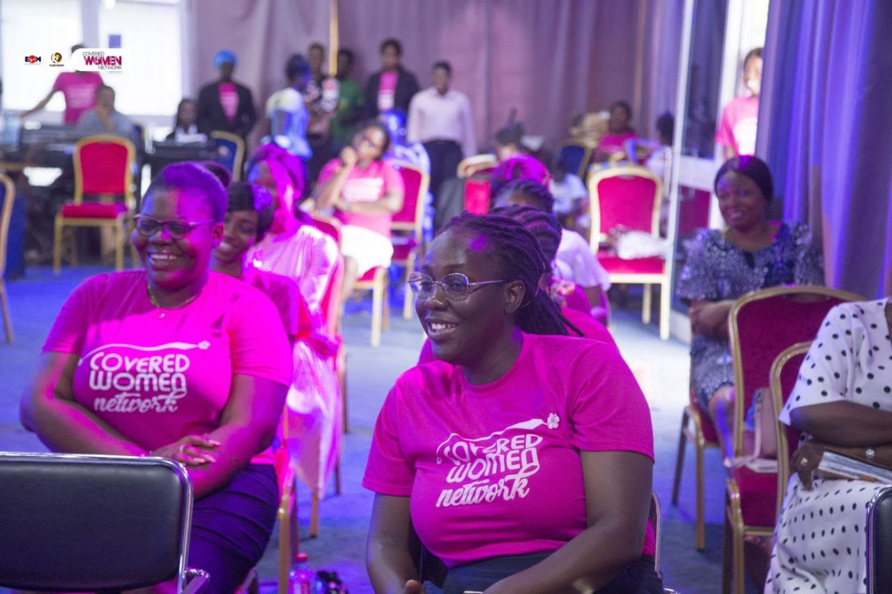
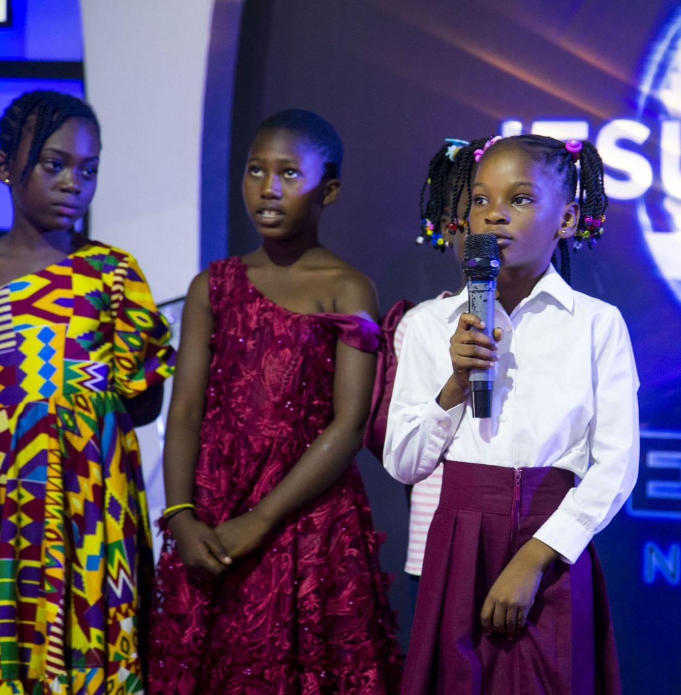
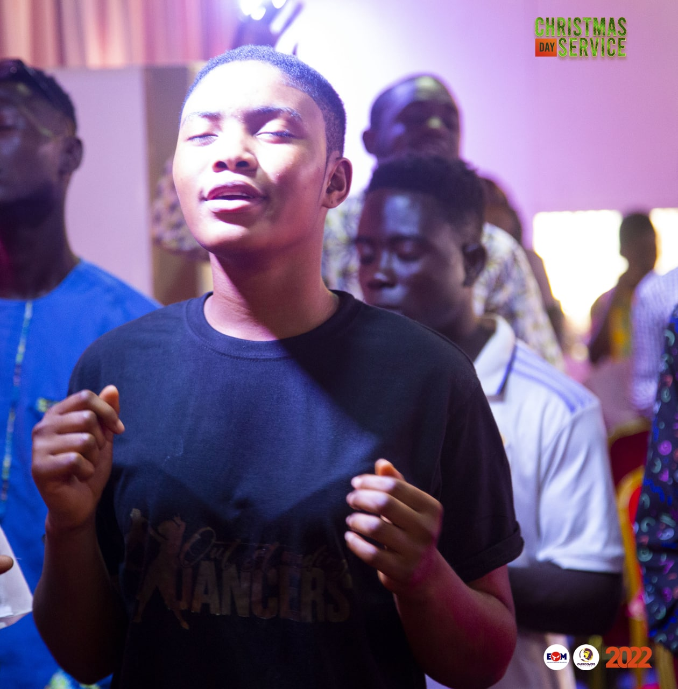
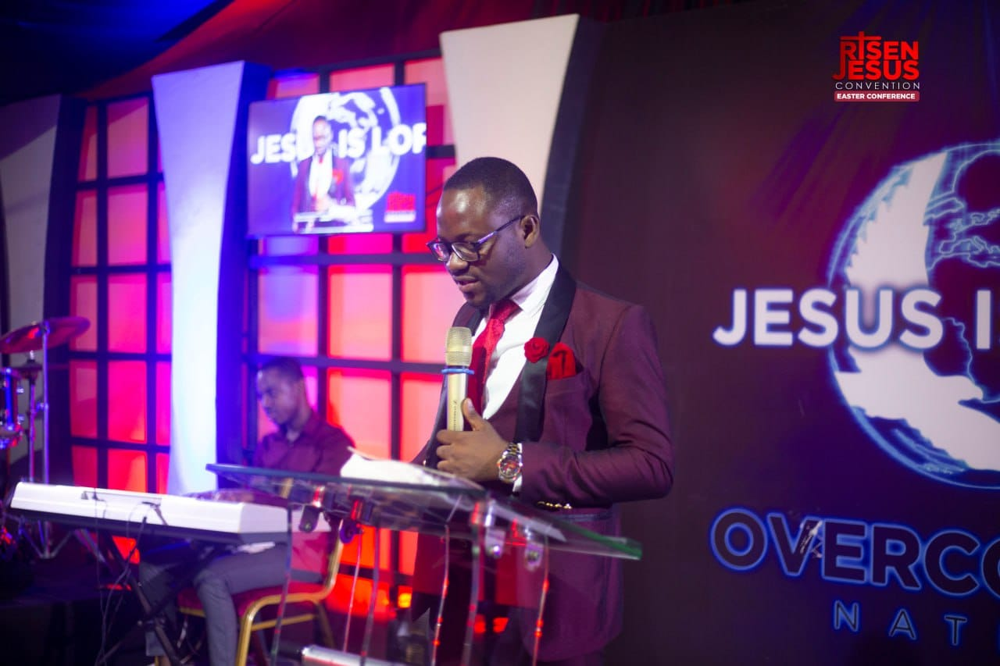
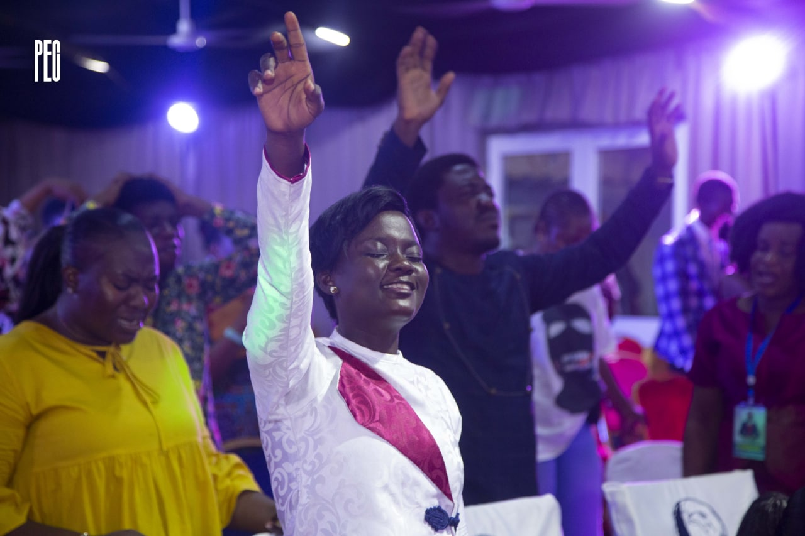
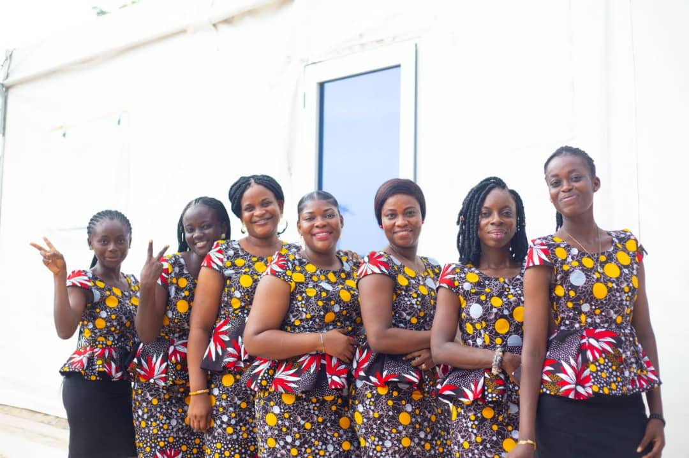
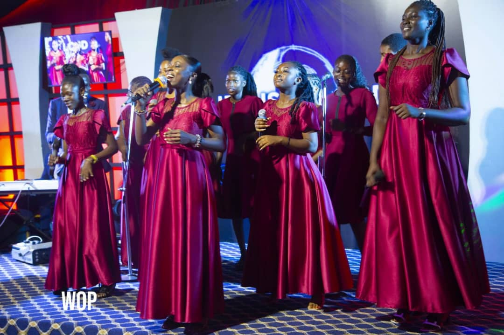
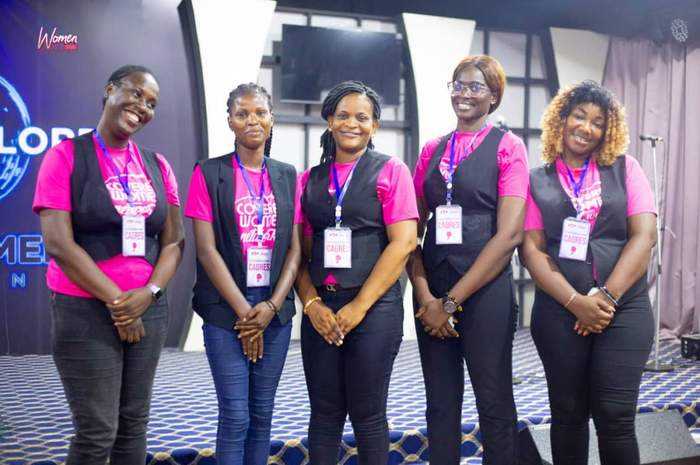

Our Gallery
The Head Pastor
Rev Ebenezer Okronipa
The Head Pastor and Administrator

Youth Program

Sunday School

Children's fun day

Description for Image

The Head Pastor
The Head Pastor with assistant Pastors

During worship Session

Coverd Women Fellowship

The Worship Team

Protocol Team